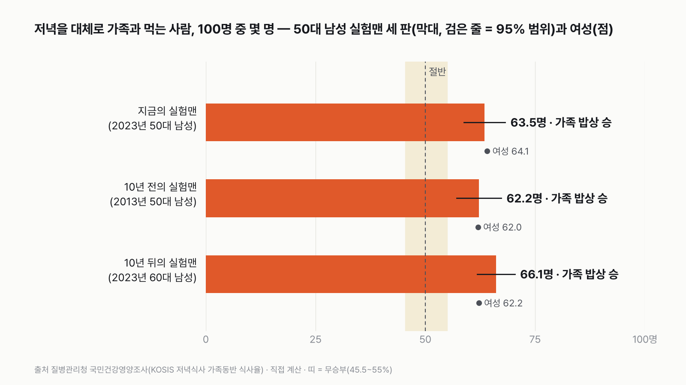
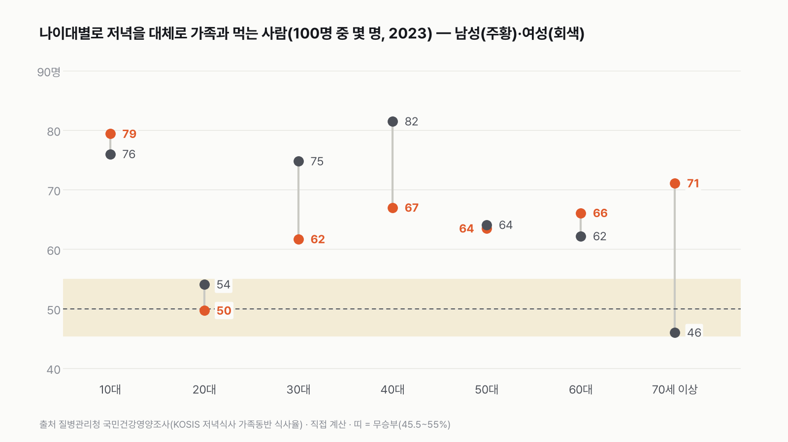
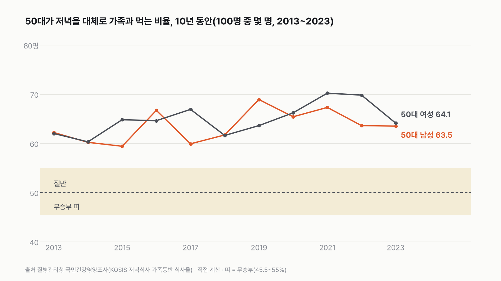

50대 남성 실험맨, 저녁을 가족과 함께 먹는 사람이 절반을 넘을까
통념대로라면 저녁 식탁에 앉는 50대 남성은 100명 중 절반도 안 될 거예요. 정말 그럴까요? 여러분 짐작은 절반 위인가요, 아래인가요?
독자 투표
50대 남성 실험맨, 저녁을 대체로 가족과 함께 먹는 사람이 100명 중 절반을 넘을까?
- "50대 아빠는 혼밥이라던데?" 회식, 야근, 주말 부부. 50대 남성의 저녁엔 가족이 없다는 말을 자주 들어요.
- 그 말이 맞는지, 이번엔 50대 남성이 실험맨으로 직접 나서요. 저녁을 대체로 가족과 먹는 사람이 100명 중 몇 명인지 세요.
- 지금의 50대, 10년 전의 50대, 10년 뒤 들어갈 60대가 차례로 나서요.
조건과 규칙
- 무엇을 세나요: 처음엔 '1년 저녁 가운데 가족과 먹은 날'을 세려 했어요. 그런데 나라 통계는 날이 아니라 사람을 세요. 정의는 "저녁을 대체로 가족과 함께 먹는 사람"이에요. 그래서 질문도 "100명 중 몇 명이 그런 사람인가"로 바꿨어요.
- 실험맨은 이번엔 50대 남성으로 나섰어요. 회식·야근·주말 부부처럼 저녁 자리를 흔드는 일로 자주 이야기되는 나이대라, 그 말이 숫자로도 맞는지 보려고요. 같은 잣대로 50대 여성도 옆에 놓았어요(점수에는 넣지 않아요).
- 숫자는 질병관리청 국민건강영양조사에서 "저녁식사 때 대체로 가족과 함께 먹는다"고 답한 사람의 비율이에요. 날짜를 센 게 아니라 사람을 센 값이에요.
- 세 판이에요. 지금(2023년)의 50대 남성, 10년 전(2013년)의 50대 남성, 그리고 지금 50대가 10년 뒤 들어갈 60대 남성(2023년).
- 기준선은 100명 중 50명이에요. 55명 이상이면 '절반 넘는다'(가족 밥상 승), 45.5명 이하면 '절반 못 넘는다'(혼밥 승)예요. 절반과 1.1배 이상 차이 나야 이기고, 그 사이는 무승부예요. 여기서 '혼밥'은 혼자 먹는 저녁만이 아니라 동료·친구와 먹는 저녁처럼 가족이 아닌 저녁을 모두 가리켜요.
- 최종 승자는 세 판 가운데 많이 이긴 쪽이에요.
결과 요약
50대 남성 100명 중 63명이 저녁을 가족과 먹어요
3판 가족 밥상 3승 → 최종 '절반 넘는다'. 통념은 숫자로는 맞지 않았어요.
- 지금의 50대 남성은 100명 중 63.5명이 저녁을 대체로 가족과 먹어요. 절반보다 13명 넘게 많아요.
- 10년 전 50대 남성도 62.2명이었어요. 10년 동안 거의 그대로예요.
- 10년 뒤 들어갈 60대 남성은 66.1명으로 더 많아요.
그래서? "50대 아빠는 저녁에 없다"는 말은 숫자로는 맞지 않아요. 같은 나이 여성(64.1명)과도 거의 같아요. 절반 근처에 있는 건 50대가 아니라 20대 남성(49.7명)과 70세 이상 여성(46.0명)이에요.
독자 예상 vs 데이터 결과
50대 남성 실험맨, 저녁을 대체로 가족과 함께 먹는 사람이 100명 중 절반을 넘을까?
데이터로 보면 절반 넘는다. 50대 남성 100명 중 63.5명이 저녁을 대체로 가족과 먹어요. 10년 전 50대(62.2명), 지금 60대(66.1명)도 모두 55명을 넘어 세 판 모두 '절반 넘는다'예요.


세 판 모두 무승부 띠(45.5~55명)보다 한참 위에 있어요. 조사 오차를 넣은 95% 범위로 봐도 세 판의 아래 끝이 57.1~61.8명이라, 띠(55명)에 닿지 않아요.
| 판 | 50대 남성 실험맨 | 같은 판 여성 | 95% 범위(남성) | 승자 |
|---|---|---|---|---|
| 1판 지금의 실험맨(2023년 50대) | 63.5명 | 64.1명 | 58.8~68.2명 | 가족 밥상(절반 넘는다) |
| 2판 10년 전의 실험맨(2013년 50대) | 62.2명 | 62.0명 | 57.1~67.3명 | 가족 밥상(절반 넘는다) |
| 3판 10년 뒤의 실험맨(2023년 60대) | 66.1명 | 62.2명 | 61.8~70.4명 | 가족 밥상(절반 넘는다) |
| 최종 | 가족 밥상 3승 → 절반 넘는다 |
판마다 50대 남성 100명 가운데 저녁을 대체로 가족과 먹는 사람 수를 세서 50명과 견줬어요. 55명 이상이면 가족 밥상, 45.5명 이하면 혼밥, 그 사이는 무승부예요. 이 규칙이면 세 판 모두 가족 밥상이 이겨요.
진짜 박빙은 따로 있었어요
50대 남성은 절반 근처에도 오지 않았어요. 그런데 나이대와 성별을 모두 펼쳐 보니, 절반에 딱 붙어 있는 사람들이 따로 있었어요. 20대 남성은 100명 중 49.7명, 거의 정확히 절반이에요. 70세 이상 여성은 46.0명으로, 혼밥 쪽 경계(45.5명)까지 0.5명 남았어요. 20대 여성(54.1명)도 무승부 띠 안이에요. 남성만 보면, 또 남녀를 합쳐도(51.8명) 저녁에 가족이 없는 사람이 가장 많은 나이는 50대가 아니라 20대였어요. 여성은 70세 이상이 더 낮아요(46.0명). 다만 20대 남성은 조사 오차를 넣은 95% 범위가 42.6~56.8명이라 무승부 띠 양쪽에 걸쳐요. 오차를 넣으면 어느 쪽으로도 갈 수 있어요.
이 나이대 값은 판정을 계산한 뒤에 펼쳐 본 거예요. 그래서 점수에는 넣지 않았어요. 같은 70세 이상이라도 남성은 71.1명이라 25명 차이가 나요. 이 표는 혼자 사는지 같이 사는지를 나눠 주지 않아서, 왜 그런지는 숫자로 말할 수 없어요.


1판 지금의 실험맨: 63.5명, 가족 밥상 승
2023년 50대 남성 436명에게 물었더니 63.5%가 "저녁은 대체로 가족과 먹는다"고 답했어요. 100명으로 바꾸면 63~64명이에요. 50대 남성 세 명 중 두 명이 저녁 식탁에 가족과 함께 앉아 있다는 뜻이에요.
2판 10년 전의 실험맨: 62.2명, 가족 밥상 승
2013년의 50대 남성은 62.2명이었어요. 지금보다 1.3명 적어요. 조사 오차(한쪽으로 5명 안팎)보다 작은 차이라, 10년 동안 거의 달라지지 않았다고 보는 게 맞아요.
3판 10년 뒤의 실험맨: 66.1명, 가족 밥상 승
지금 50대가 10년 뒤 들어갈 60대 남성은 66.1명이에요. 세 판 가운데 가장 많아요. 왜 60대가 더 많은지는 이 표만으로 알 수 없어요.


10년 동안 한 번도 절반 근처에 오지 않았어요
2013년부터 2023년까지 11번의 조사에서 50대 남성은 가장 낮을 때 59.4명(2015년), 가장 높을 때 68.9명(2019년)이었어요. 해마다 많게는 7명씩 오르내리지만, 무승부 띠(55명)까지 내려간 해는 한 번도 없어요. 어느 해를 1판으로 골랐어도 결과는 같았을 거예요.
50대 남녀는 거의 같아요
2023년 50대 여성은 64.1명, 남성은 63.5명이에요. 0.6명 차이예요. 2013년에도 62.0명과 62.2명으로 거의 같았어요. 10년 내내 두 선이 엎치락뒤치락했어요. 저녁 식탁에서 50대 남녀의 차이는 숫자로는 거의 보이지 않아요.
30·40대는 남녀 차이가 커요
30대는 남성 61.7명, 여성 74.8명이에요. 40대는 남성 67.0명, 여성 81.5명이에요. 아이를 키우는 나이대에서 여성 쪽이 13~15명 많아요. 50대에 들어서면 이 차이가 거의 사라져요. 누가 더 식탁을 지킨다는 얘기가 아니라, 나이에 따라 저녁 시간을 쓰는 모습이 달라진다는 숫자예요.
10대는 열 명 중 여덟이에요
10대(10~18세)는 남성 79.4명, 여성 76.0명이에요. 1~9세는 거의 모두(남성 98.9명)가 가족과 저녁을 먹어요. 남성은 20대에 가장 낮아지고 30·40대에 다시 돌아와요. 여성은 어른 가운데 40대에 가장 높았다가 70세 이상에서 가장 낮아요. 50대는 남녀 모두 그 곡선의 가운데, 가족과 함께 먹는 쪽에 자리 잡고 있어요.
성인 전체로 보면
19세 이상 성인 전체는 남성 62.9명, 여성 64.0명이에요(2023년). 50대 남성(63.5명)은 성인 남성 평균과 거의 같아요. "50대 남성만 유난히 저녁에 없다"는 말은 이 조사에서는 보이지 않아요.
내 저녁은 어느 쪽일까
이번 주 저녁을 하나씩 떠올려 보세요. 가족과 먹은 날이 많았나요, 아니면 회사 근처 식당과 편의점이 더 많았나요? 이 조사는 "대체로"라는 말로 물었어요. 일주일에 사흘 가족과 먹는 사람은 어느 쪽에 손을 들었을까요?
다르게 세면
아래 줄은 판정을 계산한 뒤에 더했어요. 점수에는 넣지 않아요.
| 다르게 센 조건 | 50대 남성 | 판정이라면 |
|---|---|---|
| 95% 범위의 아래 끝(1판) | 58.8명 | 그래도 55명 이상, 가족 밥상 |
| 10년 동안 가장 낮았던 해(2015) | 59.4명 | 가족 밥상 |
| 20대 남성(2023)이 실험맨이었다면 | 49.7명 | 무승부 |
| 70세 이상 여성(2023)이 실험맨이었다면 | 46.0명 | 무승부(혼밥 쪽 경계에 0.5명 차이) |
| 성인 남성 전체(19세 이상, 2023) | 62.9명 | 가족 밥상 |
이 숫자는 어디서 왔나요
출처
기준일 판정은 이 표의 가장 최근 해인 2023년과 그 10년 전인 2013년 값이에요. KOSIS 값은 2026년 11월 10일에 받았어요. 조건과 판은 2026년 11월 10일, 값을 받기 전에 정했어요.
질병관리청국민건강영양조사
- 저녁식사 가족동반 식사율 추이KOSIS DT_11702_N038원본 보기
성별 × 나이대 비율·표준오차·응답자 수, 2013~2023
어떻게 셌나요
- 숫자: 질병관리청 국민건강영양조사 「저녁식사 가족동반 식사율」이에요. "저녁식사 시 대체로 가족과 함께 식사하는 사람의 비율"이고, 저녁에 다른 사람과 함께 먹는다고 답하고 그 사람이 가족이라고 답한 사람을 세요.
- 100명으로 바꾸기: 비율(%)을 그대로 100명 중 몇 명으로 읽었어요.
- 나이대: 표의 10년 단위 나이대(50-59세, 60-69세)를 썼어요. 20대는 19~29세, 10대는 10~18세예요.
- 2013년부터만 비교: 2012년까지는 "가족과 함께 먹는가"를 바로 물었고, 2013년부터는 "누구와 먹는가"를 물은 뒤 가족인지를 봤어요. 질문이 달라서 2013년 이후끼리만 견줬어요.
- 95% 범위: 표에 실린 표준오차의 1.96배를 위아래로 더했어요. 판정은 가운데 값으로 했어요.
- 판정: 50 × 1.1 = 55명 이상이면 가족 밥상, 50 ÷ 1.1 = 45.45명 이하면 혼밥, 그 사이는 무승부예요.
| 항목 | 값 | 잰 것 / 가정 |
|---|---|---|
| 50대 남성 저녁 가족동반(2023) | 63.5%(응답 436명, 표준오차 2.4) | 잰 것(설문) |
| 50대 남성(2013) | 62.2%(응답 400명, 표준오차 2.6) | 잰 것(설문) |
| 60대 남성(2023) | 66.1%(응답 565명, 표준오차 2.2) | 잰 것(설문) |
| 50대 여성(2023 · 2013) · 60대 여성(2023) | 64.1% · 62.0% · 62.2% | 잰 것(설문) |
| 지금 60대가 10년 뒤 50대의 모습이다 | 3판 | 가정(같은 사람을 따라간 값 아님) |
| 비율 = 100명 중 몇 명 | 전체 | 읽는 방법 |
한계 6가지
이 데이터로 말할 수 없는 것
- 이 조사는 "대체로" 가족과 먹는지를 물어요. 일주일에 며칠인지, 1년 저녁 가운데 몇 번인지는 알 수 없어요.
- 표 주석에 혼자 사는 사람이 분모에 들어가는지 적혀 있지 않아요. 들어간다고 보고 읽었어요. 혼자 사는 사람이 분모에서 빠져 있다면, 그들까지 넣은 실제 비율은 이보다 낮을 수 있어요.
- 한 해 한 나이대 응답자가 400~650명이라, 해마다 많게는 7명씩 오르내리는 건 조사 오차일 수 있어요.
- 3판의 60대는 지금 50대가 10년 뒤에 그대로 되는 모습이 아니에요. 다른 사람들이에요.
- 표에 성별 × 나이대 × 소득처럼 겹쳐 나눈 값은 없어서, 일하는 50대와 쉬는 50대를 나눠 볼 수 없어요.
- 70세 이상 여성이 낮은 까닭, 20대가 낮은 까닭은 이 표만으로는 말할 수 없어요.
다음 대결
대결 다 보기
판다 vs 실험맨
판다 vs 실험맨, 다섯 판 승부로 하루에 '더 많이 먹는' 쪽은?
A판다vsB실험맨
투표하러 가기

배달·외식비 vs 스마트폰
실험맨이 1년 동안 사 먹는 밥값(배달 포함)으로 최신 스마트폰을 살 수 있을까?
A산다vsB못 산다
투표하러 가기

20대 여성 vs 65세 이상 남성
20대 여성 실험맨 vs 65세 이상 남성 실험맨, 네 판 승부로 하루 운동을 더 많이 하는 쪽은?
A20대 여성vsB65세 이상 남성
투표하러 가기

짜장면 vs 치킨
짜장면 vs 치킨, 다섯 판 승부로 값이 더 많이 오른 국민 음식은?
A짜장면vsB치킨
투표하러 가기

출퇴근 vs 연차
실험맨이 1년 동안 출퇴근에 쓰는 시간과 연차 휴가로 쉬는 시간, 세 판 승부로 더 긴 쪽은?
A출퇴근vsB연차 휴가
투표하러 가기

경복궁 vs 에버랜드
경복궁 vs 에버랜드, 다섯 판 승부로 1년에 사람이 더 많이 찾는 곳은?
A경복궁vsB에버랜드
투표하러 가기

마라톤 세계기록 vs 서울 버스
마라톤 세계기록 속도로 뛰는 사람 vs 서울 시내버스, 세 판 승부로 더 빠른 쪽은?
A세계기록 사람vsB서울 버스
투표하러 가기

실험맨 vs 수영장
실험맨 혼자 1년 쓴 수돗물로 25m 수영장 레인 한 줄을 채울 수 있을까?
A채운다vsB못 채운다
투표하러 가기
새 글 나오면 받아 보기
피드 리더 앱에 이 사이트 주소를 한 번 넣어 두면, 새 글이 올라올 때 앱에 떠요. 가입이나 메일 주소는 필요 없어요.
받는 법 보기
- 피드 리더 앱을 하나 골라요. 새 글을 모아 보여 주는 앱이에요. 예를 들면 Feedly나 Inoreader가 있어요. 둘 다 무료고 웹·휴대폰에서 써요.
- 앱에서 '구독 추가'(+)를 누르고 아래 주소를 붙여 넣어요.
- 끝이에요. 새 글이 올라오면 앱 목록에 떠요.
https://protofu.github.io/opendata-insight/feed.xmlFeedly를 쓴다면 여기를 눌러 바로 추가할 수도 있어요.